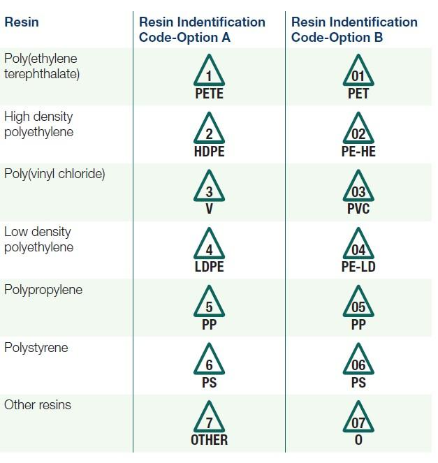

Recycling
Benefits of Recycling
Benefits of recycling include reducing the amount of waste sent to landfills, conserving natural resources, supports jobs in the recycling industry, reduces the amount of pollution created from the gathering of new resources.
Plastic
To tell if a plastic article can be recycled, just look for the looping arrows with a number in the middle.If the number is a 1 or a 2, then it is easily recyclable and can be deposited in the bin. Plastics numbered up to 7 are recyclable. Plastics numbered with a 2 in the middle are the most common types of plastic used. You do not have to remove labels from plastic bottles.
Paper
Paper with ink and newspaper can be recycled in the appropiate paper bin. Recycling paper keeps the carbon trapped in the fibers from entering the atmosphere. Thus lowering the amount of green house gases in the environment and saves trees

Electronic Waste
Bins are located on campus to recycle electronics. Raw materials such as gold and plastics can be recovered and reused.

Metal
Aluminum and tin cans are recyclable. It's not necessary to crush cans before recycling, but you are allowed to. Make sure to rinse out the can before depositing into the bin. Aerosol cans may be recycled if they are empty.

Cardboard
Cardbord products must be clean to be recycled. Wet, greasy, or waxed cardboard cannot be recycled. Just cut out the clean parts and recycle those.

Reduce & Reuse
Having A Green Home
Use energy efficient light bulbs. Install a smart meter for you heater, to regulate when your house is heated and for how long. Insulate windows during winter months. Create a compost bin
Develop Green Habits
Some good habits to develop are: Walking or riding a bike when traveling somewhere nearby. Turning off lights and faucets when not using them. Buying local produce to help lower emissions from produce traveling across country. Keeping your car maintained to keep it as fuel efficient as possible
Reduce Food Waste
To reduce food waste, plan meals ahead of time and buy only the necessary ingredients. Keep an inventory on what food you already have at home to avoid buying what you already have. Store vegetables and fruits in seperate bins in the refrigrator. Keep and store leftovers in the refrigrator and freezer. When eating out, ask for a container to take home what you don't eat.
Minimalistic Living
Think before buying something about how much you will use the product. Rent books from a library instead of buying books. Use goods for the entirety of their lifespan.
Sustainable Energy
Windmills
Windmills, or Wind Turbines, takes the aerodynamic force created when the wind moves the blades of the turbine and causes a smaller geneartor it's attached to, to turn. Causing the smaller generator to create electricity.
Solar Panels
Solar Panels work by particles of light to knock electrons free from atoms. Then gather up the electricy created from their seperation.
Statistics
Waste Statistics
In 2017, more than 267.8 million tons of solid waste was created by Americans.
Positive Impact
In 2017, approximately 67 million tons of that waste was recycled and 27 million tons was composted. This means that 94 million tons, or about 35.2%,of the waste was prevented from ending up in landfills.
Benefit to the Economy
While waste disposal has become mostly autonamted. Recycling requires people to collect and sort recyclable materials. According to the EPA's Recycling Economic Information Study, about 1.57 jobs were created for every 1,000 tons of materials recycled. Using this information, in 2017, about 170,573 jobs would have been created by the recycling industry.